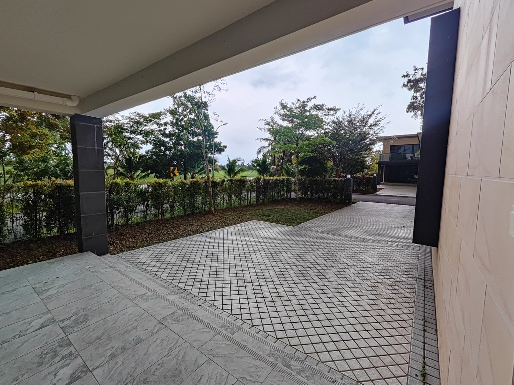
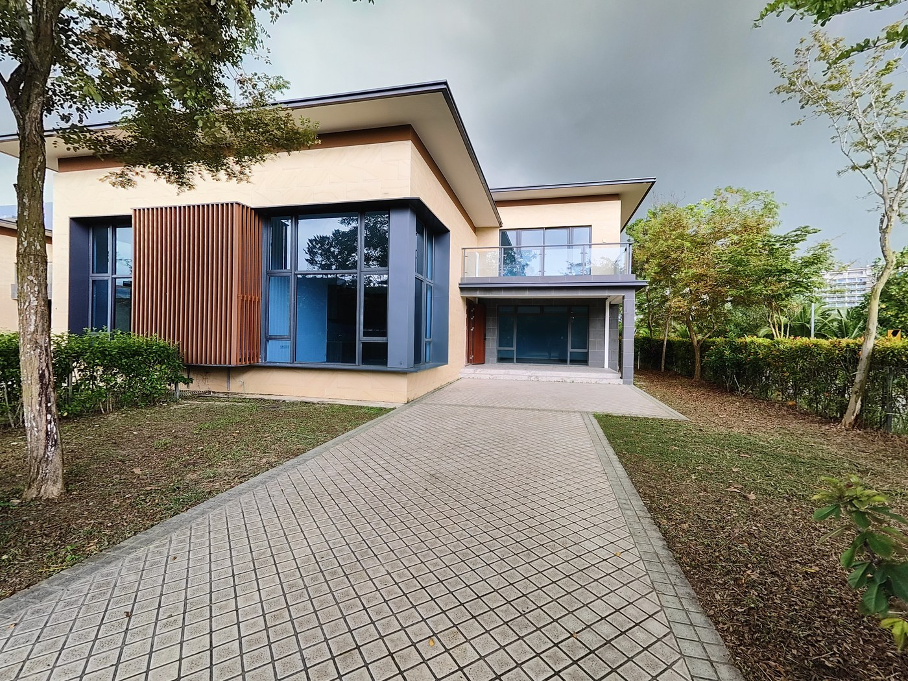
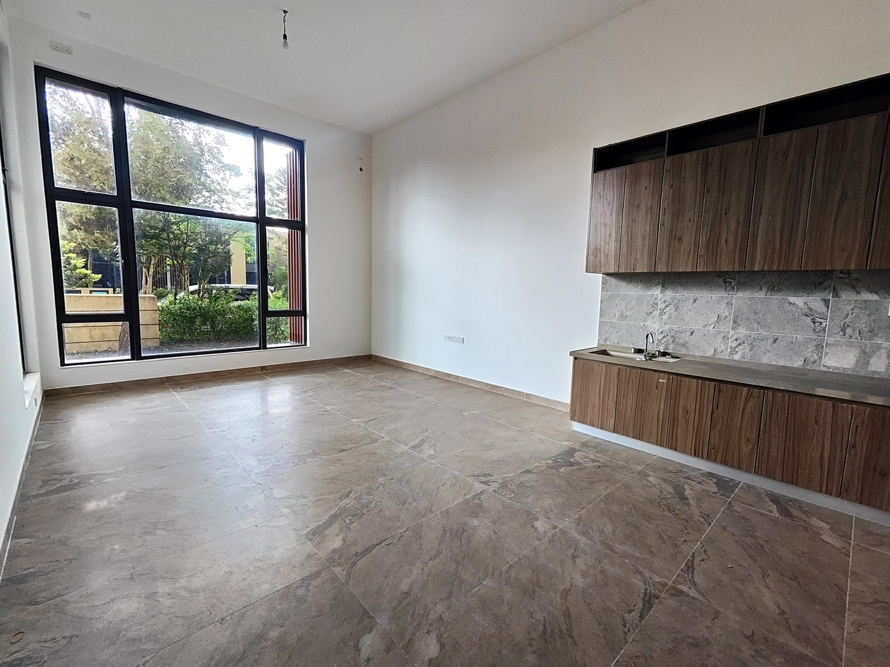
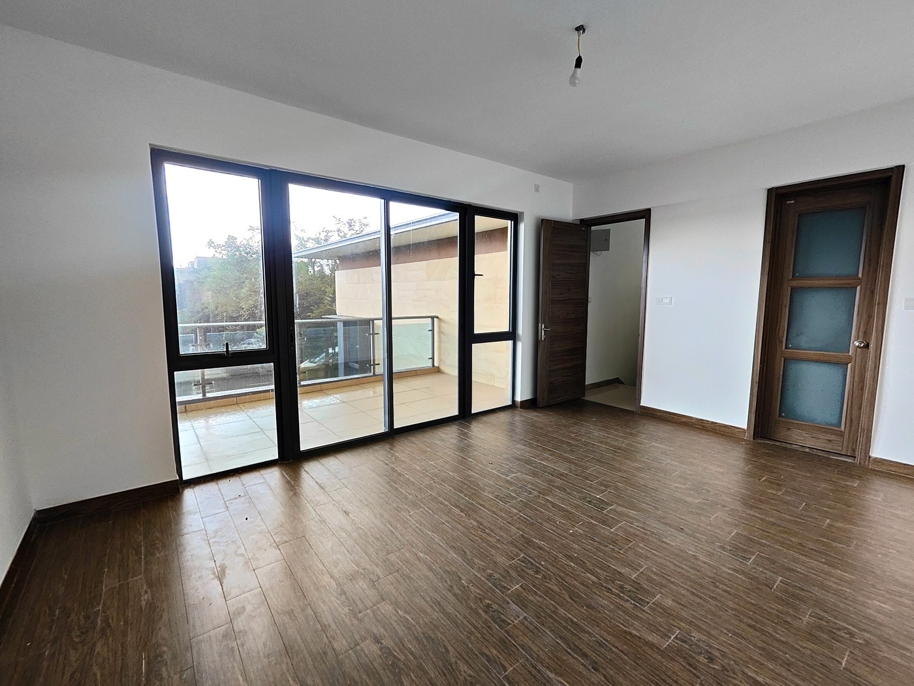
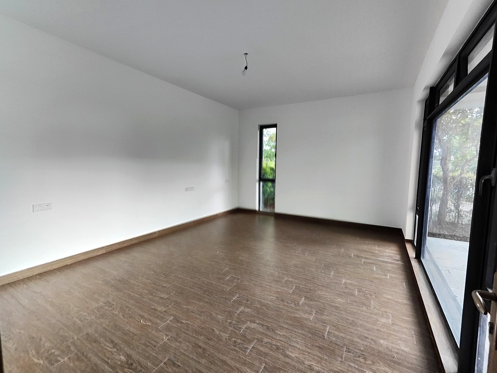
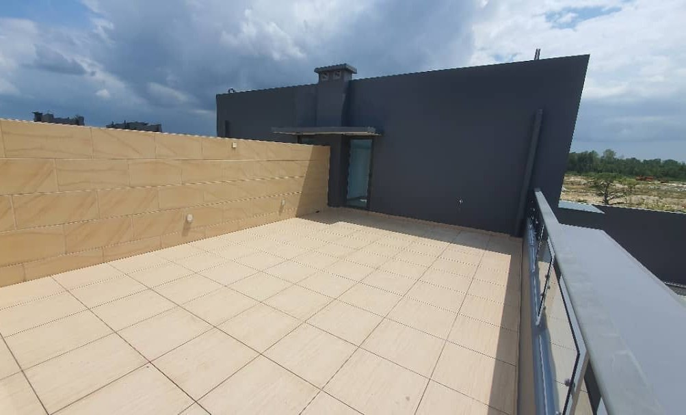

Most people who ask me about Forest City are thinking about condominiums. Few realise that Forest City also has a landed villa enclave — positioned directly alongside the golf course, with private gardens, rooftop terraces, and a living experience that is genuinely unlike anything else available on the island. These photos are from an actual unit visit.
What is a Forest City Golf Villa?
The Golf Villas are a small cluster of landed link villas built along the edge of the Forest City Golf Resort — meaning your immediate view from the carport, garden, and upper-floor windows is the fairway, not another building. The V120 type shown here is a two-storey link cluster design with an optional third-storey rooftop terrace. The plot is 33 by 60 feet, built-up area is 2,034 square feet, and the unit comes with a covered carport and a landscaped garden to the front.
This is not a condominium with a small balcony. It is a landed home on an island, surrounded by greenery, with the golf course as your front-door view.






What does a V120 unit actually look like inside?
The photos above are from a real viewing, not a developer showroom. A few things stand out when you walk through the unit. The ground floor kitchen and living area is genuinely open — floor-to-ceiling black-framed windows face the garden, flooding the space with natural light even without furniture. The marble-tile kitchen worktop and warm timber cabinetry are fitted as standard, not an upgrade. The living area flows directly to the private garden, which adds an outdoor dimension that no high-rise unit can replicate.
Upstairs, the master bedroom has a private glass balcony. The second bedroom has its own floor-to-ceiling windows framing tree canopy. Every room is designed to bring the outside in — there is a deliberate greenery-forward orientation throughout the layout that becomes apparent when you stand in the space.
The rooftop terrace on the third level is a blank canvas — wide enough for a dining set, sun loungers, and a small garden bed. On a clear day the view extends across the golf fairways and toward the strait.
What is included with the villa?
- 5-year complimentary golf membership at the Forest City Golf Resort — covering the Classic Course (ranked in Asia's Top 100 Golf Courses for seven consecutive years) and the Legacy Course designed by Jack Nicklaus, ranked 49th in Asia-Pacific 2024–2025
- Free access to the hotel swimming pool and gym managed by the five-star Forest City Golf Hotel — resort-level facilities without a monthly club fee
- Private garden space in front of the living room, already landscaped
- Private rooftop terrace on the third level
- Option to extend the 2-bedroom 2-bathroom configuration to 3-bedroom 3-bathroom within the existing structural envelope
- Covered carport for two vehicles
Who is the Golf Villa right for?
The clearest fit is a buyer who wants landed living on an island environment — the combination of private garden, privacy between units, and the golf course as your immediate neighbour is not available anywhere else in the Forest City development. If you have been living in an apartment or condominium for years and want the experience of walking out of your front door into a garden, this is it, at a price point that does not exist in Singapore or Hong Kong.
Golfers are the other obvious fit. A five-year membership at two internationally ranked courses, combined with a home a short walk from the clubhouse, is a lifestyle proposition that goes beyond the property itself.
Families looking for space will appreciate the layout — the unit is genuinely roomy for a family of four, and the rooftop terrace adds a usable outdoor dimension that compensates for the absence of a private pool. The island environment also means the immediate surroundings are quiet, green, and low-traffic in a way that mainland Johor townships typically are not.
What should buyers know before viewing?
The units I have visited are unfurnished — what you see in these photos is the bare shell finish, which is actually useful because it shows you the actual space rather than a developer staging illusion. The proportions are honest: the rooms are genuinely as large as the floor plan suggests.
The villa cluster is a small and distinct sub-community within the larger Forest City development, gated separately from the highrise zones. Access from the mainland via the bridge is straightforward, and the golf resort clubhouse, hotel pool, and gym are within walking distance of the units.
If you want to see the unit in person — which I always recommend before any property decision — send me a message and I will arrange a viewing at a time that suits you.
Want to visit the Golf Villa in person?
I can arrange a viewing at the actual unit. Tell me when you are free and I will set it up — no obligation, no pressure.
Arrange a Viewing via WhatsApp